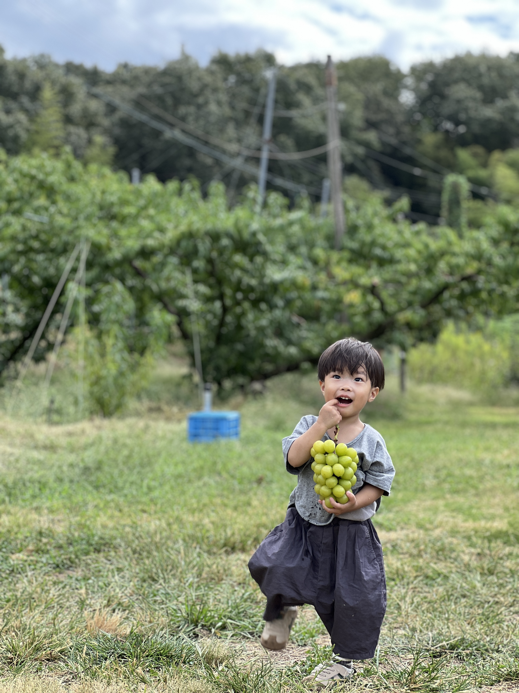

IT療育へ" data-btn-text="詳細はこちら ›" data-btn-href="./philosophy.html" data-anim="kb-pan" /> " data-btn-text="詳細はこちら ›" data-btn-href="./child.html" data-anim="kb-down" /> デイサービス
" data-btn-text="詳細はこちら ›" data-btn-href="./afterschool.html" data-anim="kb-up" /> ここで活きる
" data-btn-text="採用ページを見る ›" data-btn-href="https://bouemouse.studio.site" data-anim="kb-pan-x" />